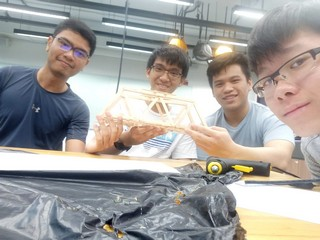
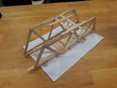
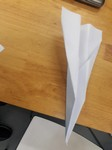
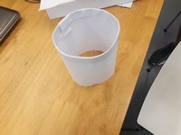
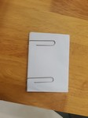
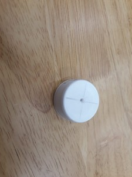
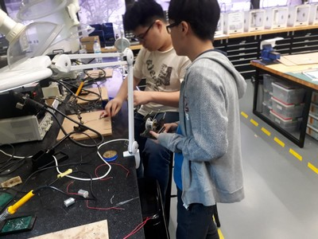
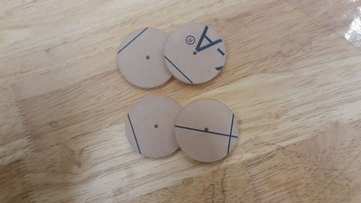

Day 1
The 1st activity of the day was to build a bridge using ice-cream sticks. We took a little long to plan how we should build the bridge to prevent it from breaking easily.
A bit of last-minute changes and problems with the hot-glue gun delayed a bit of our time in completing our bridge.
In the end, we decided on lowering the centre of gravity by adding ice-cream sticks to the base,
as well as quickly touching up on the aesthetics of the bridge due to time constraints.
During the testing of the strength of our bridges, our bridge held 6 regular hammers and 4 claw hammers.
From our project, we have learnt about time management and the ways of making a strong foundation.


After lunch, we were assigned a mission asking us to send messages via the traditional way without approaching the person in 3 ways.
At first, we were lost on our 3 ways but soon we got our thinking caps on and decided on three ideas; Paper aeroplane, cylinder and card.
We had fun testing out these items with one another before we had the actual ‘testing’.
We took a picture of our designs which we taken pictures of below,

The Paper Plane Design

The Cylinder Design

The Card Design
Thereafter, we learned about automation and introduction to the Arduino board and the UNO ATMega328 Board,
as well as simple output using LEDs and simple inputs using a push-button switch. After the lecture, we were again given another mission,
that is-build a launcher to automatically shoot our paper aeroplanes.
We were shocked at first to find out about the launcher as we did not expect that paper aeroplanes could be shot automatically by machines.
We later searched on the internet and found out that these paper aeroplane launchers were true.
We are currently on discussion on how our design of our paper plane launcher should look like.
There are currently a handful of designs we could choose from and we are currently unsure of what to choose from.
Hopefully we could finalize the design by day 2 before lunch so that we could work on the launcher.
Day 2
On the second day, we learned more about DC motors and Servo motors from our lecturers,
We suffered slight complications with coding the DC motors and Servo motors to run as the
simulations in the Tinkercad Application, but we managed to solve them by using online sources
such as examples from Arduino to code our program. As we were unfortunate victims of losing our paper planes
to throwing them up into the ceiling and accidentally losing them, we require a lot of A5 papers which we
had to cut from A4 paper which was time wasting but made up for lost time by completing the base of our
automated paper plane launcher but at the cost of not soldering our DC motors and servo motor to wires.
Allen also made a misjudgement when he was designing the ramp for our project as he glued the cardboard pieces we made without
cutting the structure for the ramp for each individual cardboard pieces beforehand. This resulted in us having to change our design
which we figured out in a short time thanks to quick thinking made by the team, as we decided to use half the cardboard as the base to place the servo
and dc motors while using the other half as our ramp which we will place the wheels on.
For the design, we were only left with the problems of the 'wheels' which were our
propellers in our automated paper plane launcher due to issues in drilling holes from bottle caps
as the bottle caps' surface were slippery and the drill would slide off, causing us to drill wrongly.
With time not on our side, we decided the best course of action would be to make do with what we have
hence, we decided to laser cut what is left of our acrylic pieces to form a circle of diameter 40mm on day 3.
We also 3D printed a holder for our DC motor which Allen decided to bring home to fit it into the DC motor which
managed to fit just nicely so we decided to print another one using the same dimensions for our 2nd DC motor.

The image shows the bottle cap drilling is slightly off the centre which affected the design planning and fabrication process.
Thankfully, most of the work was nearly done, and we believe that by day 3, we are going to finish
in time before the start of the competition after lunch. During the night, we got started on documenting and journalling on the experience we have been through
so far in the tryouts which we finished around 12 midnight! The whole team stayed up that late in order to make sure the htmls run smoothly and that
there would be no problems once we begin to upload to github. Despite battling against a lack of sleep, we are still pushing on to finish our project.
Day 3
On Day 3, we learnt how to create our own website and making a respitory using github to show off our blog through a lecture with Mr Rodney.
Immediately after our lecture, we rushed off to work, completing our laser cutting for the wheels, 3d printing the 2nd holder and soldering the wires
to the DC motors and servo motor in a short amount of time. Bryan got off to work on the circuit after successfully testing the circuit on Tinkercad, while Gabriel, Allen
and Rifaaie were working on finalising our project before we begin to test it after lunch. The team was tired and weary as we had to go all out in order to finish within
such a small window of time.

Here is Gabriel soldering the wires to our DC motors and servos.

The 4 wheels that were precisely cut, all thanks to laser cutting.
During the assembly, Gabriel accidentally super glued one of the wheels to the table as he was trying to remove some super glue stain from his fingers which resulted
in the wheel being stuck, which Rifaaie had to go down to the FabLab at T11 to laser cut one more piece which the hole had to be drilled to 2mm as the hole diameter during
the laser cutting was too small at 1.5mm which couldn't fit in the axel of the DC motor. But we got some spare wheels that were given by Mr Stevens and we used them instead,
with the the previous laser cut piece to replace one of the wheels that were too loose which affected the turning.
We super glued two wheels together into one bunch so that it can give more
force resulting in more velocity for the paper plane when it launches due to its bigger surface area which included using rubberbands in holding the two wheels together
and for the wheels to be able to reach the paper plane so that it wont be too loose when placed within the gap of the launcher.
We stopped our work around 12.45pm which pushed back our lunch way far from 12pm but we managed to get our motors and base ready for the coding, which is the only thing
left on our checklist before we begin testing the launcher for the competition. We began testing our Arduino programming immediately after lunch break and faced difficulties
in the testing process as we troubleshooted with our lecturers in finding the problems in the circuit. Eventually, we discovered it was a problem with the placement of the
wires. Time was very limited as the competition would begin soon at 3pm, so we acted fast as we can in order to meet the deadline.
As our lecturers deem the servo motors to be unnecessary in the design of the automated paper launcher as many teams had problems programming the board to the servo motor,
we scraped any ideas related to the servo motors and worked solely on our DC motors to start working. When we tested our launcher, the paper plane flew to an estimated
distance of 4.5m which was quite impressive. During the actual competition, the best out of three tries had a distance of 5.1m! We were all happy with the results
in the end.
These past three days have been memorable and a fruitful one from the great amount of things we learned in just such a short window of time. It really tested our
mettle in using past knowledge in solving problems that we faced in finding the ideal design and to work as a team despite not knowing each other beforehand.
We certainly experienced a lot and recommend others to try out this programme, should the oppurtunity arise!